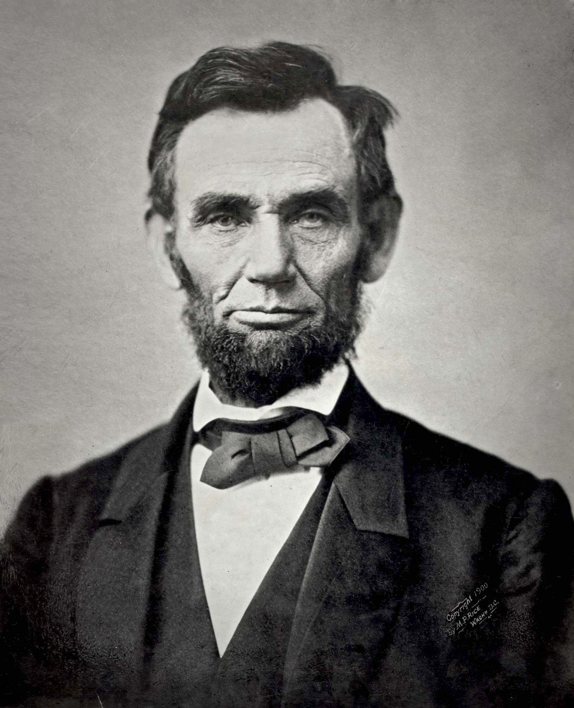

 Abraham Lincoln was the 16th President of the United States, serving from March 1861 until his assassination in April 1865. Lincoln led the United States through its Civil War, its bloodiest war and its greatest moral, constitutional and political crisis. In doing so, he preserved the Union, abolished slavery, strengthened the federal government, and modernized the economy. Lincoln grew up on the western frontier in Kentucky and Indiana. Largely self–educated, he became a lawyer in Illinois, a Whig Party leader, and a member of the Illinois House of Representatives, where he served from 1834 to 1846. Elected to the United States House of Representatives in 1846, Lincoln promoted rapid modernization of the economy through banks, tariffs, and railroads. Because he had originally agreed not to run for a second term in Congress, and because his opposition to the Mexican American War was unpopular among Illinois voters, Lincoln returned to Springfield and resumed his successful law practice. Reentering politics in 1854, he became a leader in building the new Republican Party, which had a statewide majority in Illinois. In 1858, while taking part in a series of highly publicized debates with his opponent and rival, Democrat Stephen A. Douglas, Lincoln spoke out against the expansion of slavery, but lost the U.S. Senate race to Douglas.
Elected president in what Jefferson called the "Revolution of 1800", he oversaw acquisition of the vast Louisiana Territory from France (1803), and sent out the Lewis and Clark Expedition (1804–1806), and later three others, to explore the new west. Jefferson doubled the size of the United States during his presidency. His second term was beset with troubles at home, such as the failed treason trial of his former Vice President Aaron Burr. When Britain threatened American shipping challenging U.S. neutrality during its war with Napoleon, he tried economic warfare with his embargo laws, which only impeded American foreign trade. In 1803, President Jefferson initiated a process of Indian tribal removal to the Louisiana Territory west of the Mississippi River, having opened lands for eventual American settlers. In 1807 Jefferson drafted and signed into law a bill that banned slave importation into the United States.